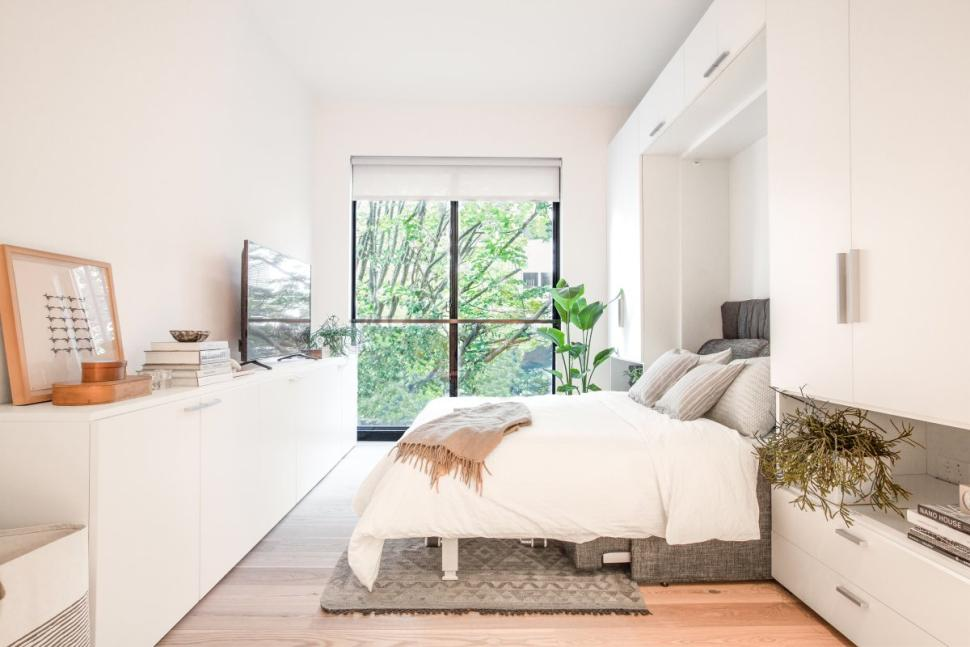
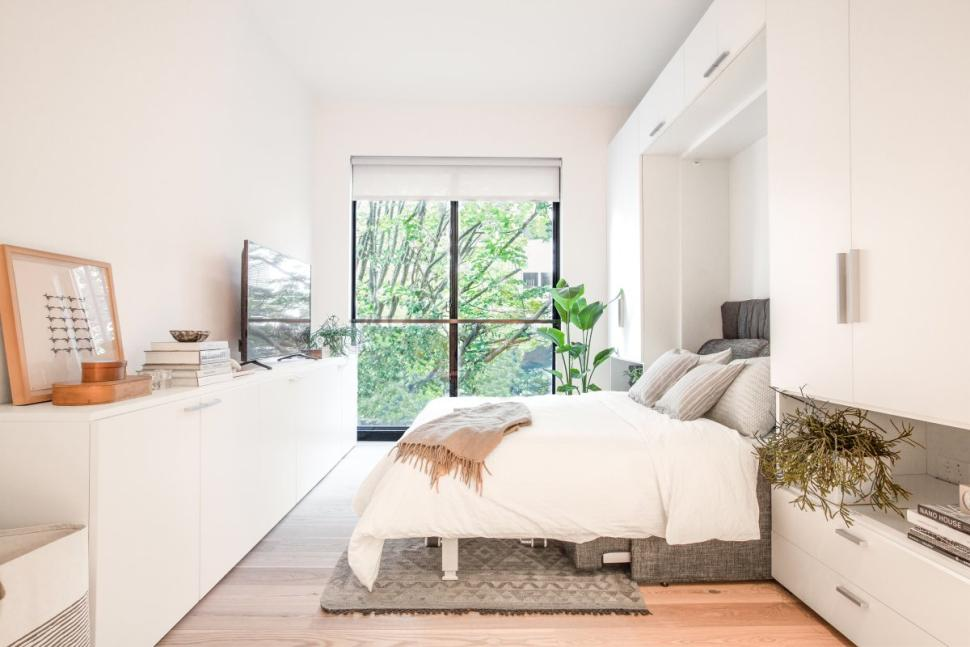

Manhattan's newest mini apartments have generated maximum interest. More than 60,000 people applied to live in 14 below-market-rate apartments ranging from 265 to 360 square feet, slightly bigger than the size of an average one-car garage.
In response, the de Blasio administration is proposing to end a limit on how small apartments can be, opening the door to more "micro-apartments" that advocates see as affordable spaces to help the growing population.
"The pent-up demand has always been there," said Tobias Oriwol, the developer of Carmel Place on 335 East 27th St. in Kips Bay.The building with 55 micro units is expected to be ready in March.
For 11 units, the rent will be $950 a month, records show. The remaining three below-market units will cost $1,490 a month. Eight units have also been set aside for formerly homeless veterans on Section 8. And one unit will be used by the building’s super.
The other 32 apartments will rent for $2,650 and $3,150 a month. That covers several amenities like cable, wireless Internet, and weekly cleanings and monthly deep cleanings.coun
As an experimental project, Carmel Place got city land and a waiver from New York's 400-square-foot minimum on new apartments, set in 1987.
A proposed elimination of that minimum would allow smaller studios in buildings with a mix of apartment sizes, but entire micro-unit buildings would continue to need waivers.
De Blasio's housing plan says Carmel Place and other projects show "developers can build compact units that are livable, safe, healthy" options for small households. Cities from San Francisco to Boston have OK'd some micro-apartments in recent years, seeking to address housing squeezes in a nation where 28% of households are people living alone, up from 13% in 1960. It's higher in some cities including New York, where about a third of households are single people.
But not everyone is a fan of the mini apartments. Some like Assemblywoman Deborah Glick see the units as a regressive way to handle the affordable housing crisis.
"There was no way two lives could reasonably exist in the space that we have," Glick told the Associated Press. "We get along extremely well, but we do have a safety valve."
Still, Oriwol, who lives in a 600-square-foot one-bedroom apartment with his wife in Prospect Heights, is considering moving into one of his own smaller apartments.
"They are really well designed," he boasted. "They have a whole bunch of services not usually included."
.jpg) 
